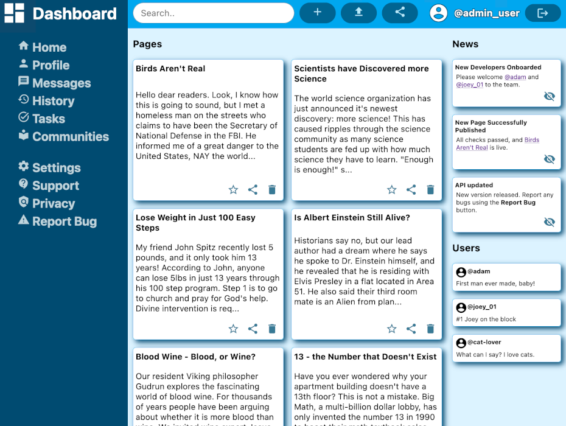
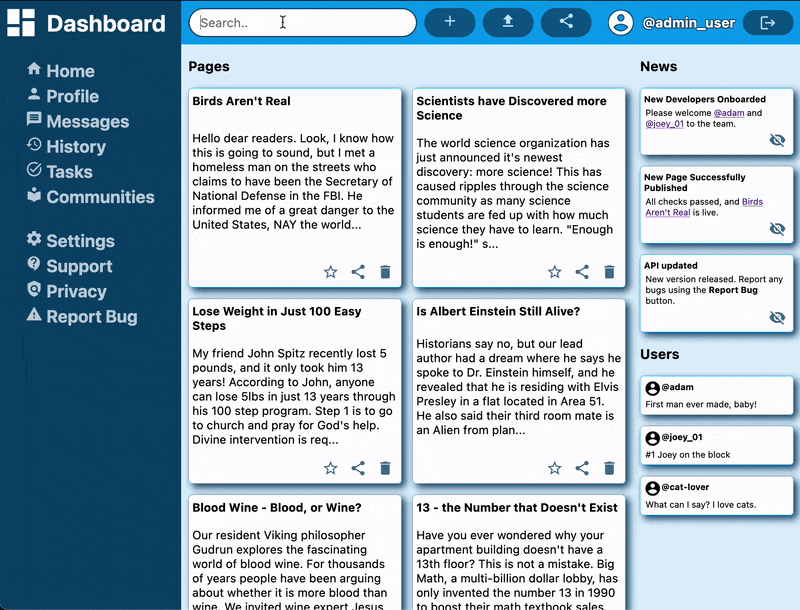

Front-end Admin Dashboard Built with HTML, SCSS and Javascript

Aesthetic Design
Side-menu navbar and top menu with easily accessible admin utilities

Real-time searchbar
Searchbar hides pages that do not match the search terms with every key stroke

Responsive design
With a combination of grid and flexbox, page elements readjust to fit every screen size
Project Description
Admin Dashboard Front-end
Project Details
- Search bar updates page results with every keystroke
- Pages can be favourited, shared, and deleted
- News items can be hidden and shown again
- Aesthetic responsive design using grid and flexbox layouts